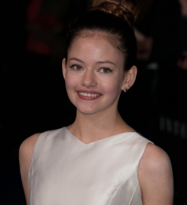
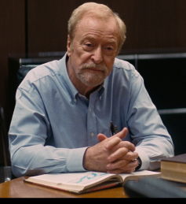
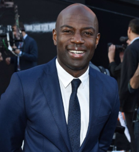
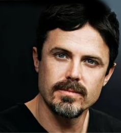
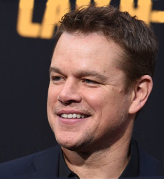

Интерстеллар
Следующий шаг человечества станет величайшим
О фильме
Когда засуха, пыльные бури и вымирание растений приводят человечество к продовольственному кризису, коллектив исследователей и учёных отправляется сквозь червоточину (которая предположительно соединяет области пространства-времени через большое расстояние) в путешествие, чтобы превзойти прежние ограничения для космических путешествий человека и найти планету с подходящими для человечества условиями.
Страна
Жанр
Режиссер
Сценарий
Продюсер
Оператор
Композитор
Художник
Монтаж
Рейтинг
США, Великобритания, Канада
фантастика, драма, приключения
Кристофер Нолан
Джонатан Нолан, Кристофер Нолан
Кристофер Нолан, Линда Обст, Эмма Томас, и др
Хойте Ван Хойтема
Ханс Циммер
Нэйтан Краули, Кенделл Эллиотт, Эггерт Кетилссон, и другие
Ли Смит
IMDb 8,601
КиноПоиск 8,60
Актёры
Купер
Мэттью МакКонахи
Американский актёр и продюсер. Поначалу зарекомендовав себя как актёр, в основном, комедийного амплуа, во втором десятилетии XXI века Макконахи перешёл к крупным драматическим ролям, удостоившись ряда наград и положительных отзывов от кинопрессы за картины «Линкольн для адвоката», «Мад», «Киллер Джо», «Далласский клуб покупателей», «Супер Майк», «Интерстеллар» и «Джентльмены».
Амелия
Энн Хэтэуэй
Американская актриса и певица. Обладательница премий «Эмми», «Золотой глобус», Премии Гильдии киноактёров США, «BAFTA» и «Оскар» за лучшую женскую роль второго плана в фильме-мюзикле «Отверженные». Фильмы с её участием заработали 6,4 млрд долларов по всему миру, и она вошла в Forbes Celebrity 100 в 2009 году.
Мёрф
Джессика Честейн
Американская актриса и продюсер. Актёрская карьера Джессики началась с роли Кэролайн Стоддард в пилоте сериала 2004 года «Мрачные тени», который являлся попыткой перезапуска одноимённого сериала 1960-х годов.
Ешё в фильме
Маккензи Фой
Мёрф (10 лет)
Майкл Кейн
Проффесор Бранд
Дэвид Гяси
Рамиль
Кейси Аффлек
Том
Мэтт Дэймон
Манн
Джон Литтоу
Дональд
Похожее
Фильмы, рекомендованные пользователям, которым понравился фильм «Интерстеллар»
Гравитация
Начало
Марсианин
Прометей